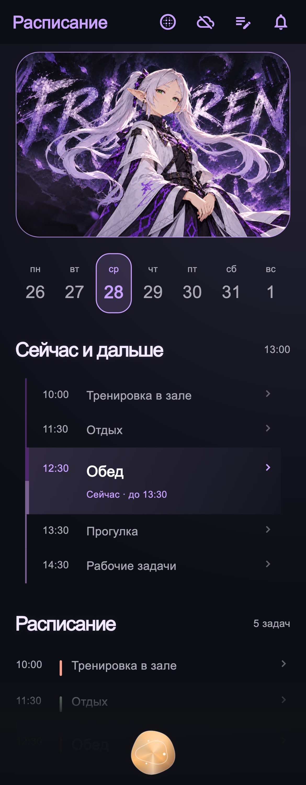
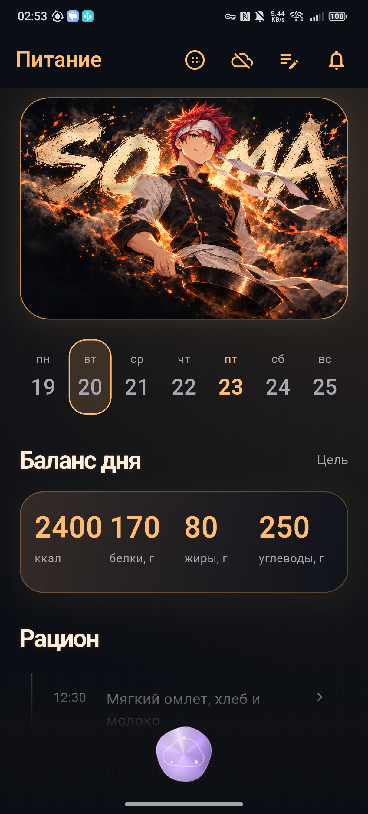
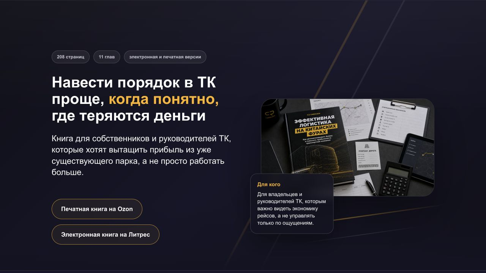
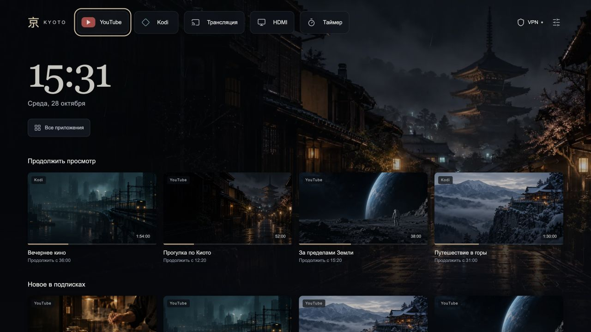
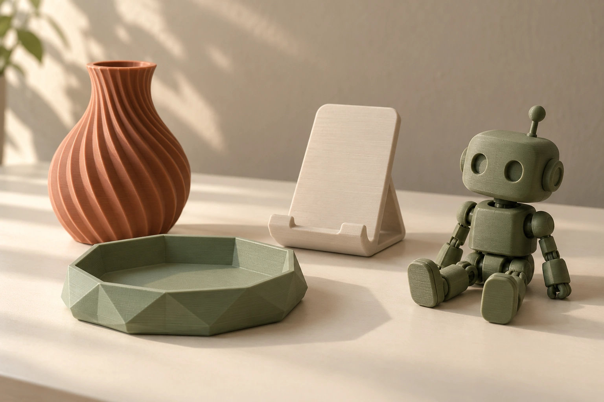

Олег Джадан
Project Manager
Руководил командами и операционным маркетингом. Теперь применяю этот опыт в проектах с ИИ — от первых вводных до работающего продукта.
Работа с ИИ в деталях.
Здесь можно увидеть, как я ставлю задачи, собираю решения и проверяю их в деле. Внутри — экраны, сценарии и мой вклад в каждый проект.


Моя команда ИИ-агентов
От правил работы до приложения на Android. Планирование, питание, тренировки и связь между помощниками.

Сайты, сделанные с ИИ
Лендинги Cargo.run, первое веб-приложение и это портфолио. Разные задачи — один способ работать.

Техника под мои привычки
Телевизор и ПК.
ИИ в обычных делах
Делегирую поиск и сравнение. Покупки, сложные вопросы и информация, которую нужно собрать в понятный ответ.
Начал с рекламы. Постепенно взялся за процессы.
Мой карьерный путь начался в Skillbox с работы таргетологом. Сначала я вёл рекламу двух курсов. Потом их стало больше — иногда 8–12 одновременно.
Постепенно моя работа перестала заканчиваться рекламным кабинетом. Я обучал коллег, координировал подготовку материалов, разбирался в отчётности. Всё чаще интересовал вопрос: как организовать работу так, чтобы она не держалась на постоянных ручных усилиях?
От таблиц и процессов — к управлению командой.
В Mentorama я дорабатывал отчётность и участвовал в организации работы с дизайнерами и блогерами. В GeekBrains соединил этот опыт с выгрузками из рекламы и CRM. Параллельно обучение веб-дизайну выросло в Starbizzz — отдельный проект, который пришлось оставить, когда совмещать стало слишком сложно.
В Skillbox взялся за задачи на стыке маркетинга и продаж. Затем — за систему планирования. Нужно было договориться, кто готовит данные, кто проверяет план и как команда принимает решения.
Со временем стал руководить операционным планированием, затем контекстной рекламой. А после реорганизации маркетинга принял весь операционный блок — команду из 10 человек.
Вместе с новой ролью добавились другие рекламные направления, работа с финансами и документами. Я быстро разобрался в этих процессах и перераспределил задачи. Так мы продолжили работу и сохранили выручку в непростой для компании период.
В этой части карьеры я научился работать с неопределённостью: разобраться самому, объяснить другим и не потерять результат за количеством задач.
А что, если идею можно собрать самому?
Интерес к ИИ появился ещё в маркетинге: тексты, рекламные гипотезы, помощь дизайнерам. В Cargo.run получилось погрузиться глубже. Я перешёл в B2B SaaS для логистики и стал делать сайты с помощью Codex.
Здесь уже было мало получить красивый первый экран. Нужны были понятный путь посетителя, мобильная версия, рабочие переходы и аналитика. Я ставил задачи ИИ, смотрел результат в браузере и доводил страницы до нужного состояния.
Как я делаю сайты ↗После рабочих сайтов взялся за то, чего не хватало мне самому.
Много рутинных задач, но жизнь-то одна.
Поэтому я начал делегировать рутину ИИ: что приготовить, как учесть КБЖУ, составить список покупок, продумать тренировки и не забыть о важных задачах. Постепенно помощникам понадобились общие правила, хранилище и приложение. Так вырос мой личный проект.
Я определял функции, продумывал сценарии, ставил задачи агентам и проверял, что получилось. Приложение уже можно открыть на Android и показать изнутри.
История системы агентов ↗Что я хочу от работы.
Ищу постоянную роль в продуктовой команде. Хочу погрузиться в продукт и отвечать за то, как он развивается.
- Запускать и улучшать. Брать задачу, разбираться в ней, собирать план и доводить работу команды до результата.
- Работать с тем, что мне интересно. В первую очередь — ИИ-помощники, полезные сервисы и автоматизация.
- Влиять на решения. Обсуждать идеи с командой, проверять их в деле и понимать, что стало лучше для пользователей.
Путь по датам.
От первых рекламных кампаний до управления командой и личных ИИ-проектов.
SkillboxТаргетолог
Продвигал IT-курсы и вебинары в России и СНГ. Начинал с двух курсов, со временем вёл 8–12 одновременно. Совокупный рекламный бюджет за период — около 25 млн рублей.
- Планировал и запускал кампании, тестировал рекламные гипотезы и участвовал в расчёте экономики курсов.
- Ставил задачи дизайнерам и копирайтерам, координировал подготовку материалов.
- Обучал новых сотрудников отдела работе с рекламными кампаниями.
MentoramaИнтернет-маркетолог
Старший специалист по таргетированной рекламе · май — декабрь 2022
Вёл рекламу образовательных продуктов на рынке Бразилии.
- Предложил и реализовал доработку отчётности в Google Sheets: на основе нескольких исходных показателей рассчитывалась вся воронка — от расходов до продаж и окупаемости.
- Добавил подробные разбивки и сравнение с планом, улучшил интерфейс. Отчётность стала глубже без увеличения времени заполнения; часть операций ускорилась. Систему использовал весь отдел.
Помощник маркетолога — интернет-маркетинг · январь — июль 2023
Развивал маркетинг образовательных продуктов на рынке Бразилии. Тестировал новые каналы, включая TikTok и LinkedIn.
- Участвовал в разработке процесса работы с блогерами: этапы взаимодействия, регламенты и отчётность для оценки размещений.
- Помогал организовать работу маркетинга с дизайнерами. Наладил передачу результатов креативов из рекламы, чтобы дизайнеры могли учитывать их в новых материалах.
- Внедрял ChatGPT для подготовки тестовых заданий, рекламных текстов и гипотез. Помогал дизайнерам подбирать и тестировать генерацию изображений и анимацию креативов.
- Участвовал в проекте коротких обучающих роликов для YouTube с использованием ИИ. Пилот одобрило руководство, но регулярный выпуск не запустили из-за ограничений бюджета.
StarbizzzРуководитель отдела по трафику
Начал с обучения веб-дизайну для расширения навыков. Постепенно подключился к задачам школы и взял на себя привлечение клиентов, совмещая проект с основной работой.
- Сформировал команду, координировал специалистов по рекламе, дизайну и аналитике, подключал подрядчиков.
- Организовывал запуск и доработку сайтов, чат-ботов, марафонов и автовебинаров. Распределял задачи между собой, командой и подрядчиками.
- Настроил сквозную аналитику и отчётность, наладил передачу заявок в продажи и контроль их обработки. Тестировал новые источники привлечения и географии.
Завершил участие, когда масштаб проекта стало сложно совмещать с основной работой. Решил сосредоточиться на развитии внутри Skillbox.
GeekBrainsТаргетолог
Вёл рекламу во ВКонтакте для 6–8 образовательных курсов, участвовал в планировании и анализе результатов.
- Автоматизировал отчётность: объединил данные рекламного кабинета и CRM. Для обновления отчёта было достаточно загрузить две выгрузки.
- Готовил отчёты и сверки для руководства, помогал тимлиду готовиться к встречам и решал технические задачи по обработке данных.
Команды GeekBrains и Skillbox работали в одном отделе. Консультировал тимлида Skillbox по аналитике и планированию. При сокращении маркетинга GeekBrains при его поддержке перешёл в Skillbox на позицию ведущего таргетолога.
SkillboxВедущий таргетолог
Вёл рекламу во ВКонтакте для прямых продаж и вебинаров. Затем взял на себя проекты по обработке лидов и планированию маркетинга.
- Изучил успешный подход подрядчика и организовал тесты на своих курсах и проектах команды. Часть проектов вернулась к окупаемости. Определил, что механика лучше работает на широкой аудитории, и организовал её применение на подходящих вебинарах.
- Наладил совместную работу маркетинга и отдела продаж: ввёл регламент, таблицы для разбора кейсов, контроль задач и ответственных. Организовал проверку скорости обработки лидов, причин закрытия сделок и звонков. Координировал тестирование изменений и оценку их влияния на продажи.
- Внедрял планирование от расходов до выручки, чтобы вовремя сокращать затраты на неэффективные курсы. На фоне комплекса изменений к концу 2024 года конверсия из лида в продажу выросла примерно вдвое, канал вернулся к положительной окупаемости.
- Отвечал за разработку ГСП — глобальной системы планирования. Вместе с руководителем распространил подход на другие каналы: к февралю 2025 года по нему работали команды контекста и инфлюенс-маркетинга.
В марте 2025 года назначен руководителем операционного планирования.
SkillboxРуководитель операционного планирования
Отвечал за планирование операционного маркетинга, развитие системы планирования и координацию связанных задач отдела. В команде — три сотрудника, которые совмещали эти задачи с основной работой.
- Организовал ежемесячный процесс планирования: кто готовит данные и планы, кто их проверяет, в какие сроки и как согласуются изменения. Координировал специалистов, тимлидов, performance-менеджеров и отдел продаж.
- Развивал глобальную систему планирования — ГСП. Упростил интерфейс и структуру таблиц, улучшил совместную работу, добавил расчёты для проверки планов и учёт выручки от косвенного влияния рекламы.
- Автоматизировал подготовку планов по результатам предыдущих месяцев. Команда получала готовый предварительный расчёт, проверяла его и вносила необходимые правки. Это сократило ручную работу.
- Распределял задачи и нагрузку команды, контролировал сроки. Координировал автоматизации и подготовку отчётности, участвовал в создании и тестировании отчёта по ассоциированной выручке.
Планирование стало понятнее для участников. Учёт последних результатов и своевременные изменения планов помогали избегать просадок окупаемости рекламы — ROMI.
В сентябре 2025 года по предложению нового руководителя блока перешёл на должность руководителя контекстной рекламы.
Холдинг SkillboxРуководитель контекстной рекламы
Руководил контекстной рекламой Skillbox, Skillfactory, Contented и GeekBrains для прямых продаж и вебинаров. Управлял бюджетом в несколько десятков миллионов рублей в месяц.
- Перестроил команду: провёл индивидуальные встречи, разобрал проблемы и перераспределил задачи. Провёл кадровые изменения, включая увольнения и повышения сотрудников. Наладил обмен опытом и взаимодействие с другими отделами.
- Оптимизировал кампании и расходы, отдельно пересмотрел работу с вебинарами. Сформировал план развития направления и проверки рекламных гипотез.
- Подключил подрядчика: организовал совместную работу с командой, постановку задач и контроль результатов.
- Вместе с сотрудниками и с помощью ИИ разработал сервис для сбора поисковых запросов под рекламные кампании.
- Сохранил выручку меньшим составом команды. В ноябре 2025 года направление показало лучшие показатели маржинальности за год.
В декабре после масштабного сокращения маркетинга возглавил операционный блок. Дополнительно принял таргетированную рекламу и новые источники трафика, включая Т-Банк, Сбер, Ozon и другие площадки.
Холдинг SkillboxРуководитель операционного блока
Руководил операционным маркетингом холдинга: Skillbox, Skillfactory, Contented и GeekBrains. В зоне ответственности — контекстная и таргетированная реклама, новые каналы, планирование и техническая поддержка. Команда — 10 сотрудников и два подрядчика.
- Принял управление после сокращения команды и бюджетов. Подхватил текущие кампании, перераспределил нагрузку и приоритеты, сохранил работу направлений и выручку блока.
- Руководил тестированием новых источников трафика: ставил задачи, контролировал запуски, оценивал прямые продажи и влияние на другие каналы. По результатам выбирал направления для дальнейшей работы.
- Подхватил размещение в Т-Банке в процессе запуска и координировал работу команды в новогодние праздники.
- Отвечал за планы, бюджеты и отчётность перед руководством маркетинга и CEO. Быстро освоил новые для себя задачи по документообороту и взаимодействию с финансами.
В июне 2026 года перешёл в Cargo.run по приглашению бывшего коллеги: после нескольких лет в EdTech хотел попробовать B2B SaaS и глубже применять ИИ, на который раньше не хватало времени из-за управленческой нагрузки.
Cargo.runИнтернет-маркетолог · B2B SaaS
Продвигал B2B SaaS-продукт для транспортных компаний. С помощью Codex и других ИИ-инструментов создавал сайты и рекламные креативы без привлечения дизайнера. Настраивал рекламу и ретаргетинг в Яндекс Директе и VK Ads, связывал аналитику сайтов с данными CRM для оценки заявок и продаж.
Ушёл по собственному желанию: хотел попробовать новое направление после EdTech, но работа снова сосредоточилась на вебинарах и обучении. Частые переключения между задачами и переработки усилили усталость от маркетинга.
Личные проектыИИ-агенты и Android
После ухода из Cargo.run занялся личным проектом: объединил инструменты для планирования дня, питания, тренировок и финансов в полноценное Android-приложение с ИИ-агентами. С помощью Codex и Claude Code организовал разработку: определял функции, продумывал сценарии и интерфейс, ставил задачи агентам, проверял и дорабатывал результат. Приложение использую сам и готов показать на собеседовании.
В этом проекте совмещал задачи продакта и проджекта — от выбора функций до управления разработкой. Мне понравилась эта работа, и вместе с предыдущим управленческим опытом она подтолкнула меня к переходу в управление проектами и продуктами.
В повседневной жизни использую ИИ для планирования, анализа финансов, работы с информацией и создания небольших программ, которые упрощают рутинные задачи.
Не только проекты.
Дома есть 3D-принтер. Нравится, когда идея становится вещью, которую можно взять в руки и использовать.
Регулярно хожу в зал и занимаюсь спортом. Люблю компьютерные игры и вечера за фильмом, сериалом или аниме.
